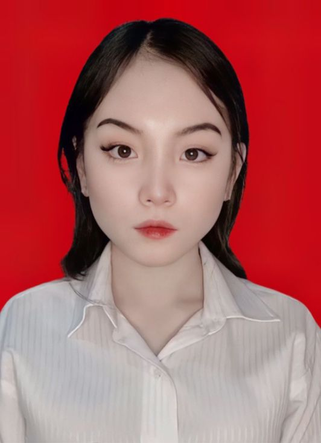

Nama : Maryam Grischelda Ardety Wijaya
Umur : 20 Tahun
Tempat Tanggal Lahir : Pontianak, 3 Januari 2004
Email : grischllyn@gmail.com
Saya adalah mahasiswi semester 5 S1 Sistem Informasi di Telkom University dengan minat dan keahlian di bidang desain UI/UX.Saya sangat menyukai dunia kreativitas.,selain membuat desain UI/UX, saya juga mahir di dalam berbagai bentuk kreativitas lainnya, seperti membuat kerajinan rajut, bermain musik, menulis lirik lagu, menciptakan instrumen lagu, mendesain serta menjahit pakaian, dan menggambar sketsa.
Riwayat Pendidikan
Jenjang Pendidikan
Nama Sekolah
Tahun
SMP
SMPN 48 Bandung
2016 - 2019
SMA
SMAN 22 Bandung
2019 - 2022
Perguruan Tinggi
Telkom University
2022 - Sekarang
Skill Yang Dikuasai
1. Bahasa pemograman Python, Java, HTML
2. Visual Paradigm
3. Microsoft Office
4. Ableton Live
5. FL Studio 20
6. Cisco Packet Tracer
7. Figma
8. CLO Standalone OnlineAuth
9. Bizagi
10. MediBang Paint